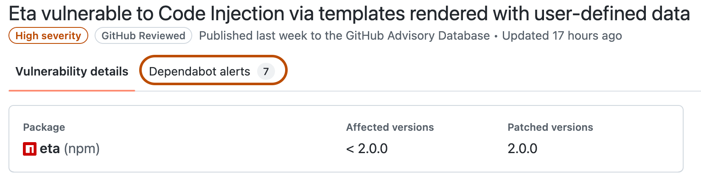

You can browse the GitHub Advisory Database to find CVEs and GitHub-originated advisories affecting the open source world.
You can access any advisory in the GitHub Advisory Database.
Navigate to https://github.com/advisories.
Optionally, to filter the list of advisories, use the search field or the drop-down menus at the top of the list.
Note
You can use the sidebar on the left to explore GitHub-reviewed and unreviewed advisories separately, or to filter by ecosystem.
Click an advisory to view details. By default, you will see GitHub-reviewed advisories for security vulnerabilities. To show malware advisories, use type:malware in the search bar.
The database is also accessible using the GraphQL API. By default, queries will return GitHub-reviewed advisories for security vulnerabilities unless you specify type:malware. For more information, see the Webhook events and payloads.
Additionally, you can access the GitHub Advisory Database using the REST API. For more information, see REST API endpoints for global security advisories.
You can suggest improvements to any advisory in the GitHub Advisory Database. For more information, see Editing security advisories in the GitHub Advisory Database.
You can search the database, and use qualifiers to narrow your search. For example, you can search for advisories created on a certain date, in a specific ecosystem, or in a particular library.
Date formatting must follow the ISO8601 standard, which is YYYY-MM-DD (year-month-day). You can also add optional time information THH:MM:SS+00:00 after the date, to search by the hour, minute, and second. That's T, followed by HH:MM:SS (hour-minutes-seconds), and a UTC offset (+00:00).
When you search for a date, you can use greater than, less than, and range qualifiers to further filter results. For more information, see Understanding the search syntax.
| Qualifier | Example |
|---|---|
type:reviewed |
type:reviewed will show GitHub-reviewed advisories for security vulnerabilities. |
type:malware |
type:malware will show malware advisories. |
type:unreviewed |
type:unreviewed will show unreviewed advisories. |
GHSA-ID |
GHSA-49wp-qq6x-g2rf will show the advisory with this GitHub Advisory Database ID. |
CVE-ID |
CVE-2020-28482 will show the advisory with this CVE ID number. |
ecosystem:ECOSYSTEM |
ecosystem:npm will show only advisories affecting npm packages. |
severity:LEVEL |
severity:high will show only advisories with a high severity level. |
affects:LIBRARY |
affects:lodash will show only advisories affecting the lodash library. |
cwe:ID |
cwe:352 will show only advisories with this CWE number. |
credit:USERNAME |
credit:octocat will show only advisories credited to the "octocat" user account. |
sort:created-asc |
sort:created-asc will sort by the oldest advisories first. |
sort:created-desc |
sort:created-desc will sort by the newest advisories first. |
sort:updated-asc |
sort:updated-asc will sort by the least recently updated first. |
sort:updated-desc |
sort:updated-desc will sort by the most recently updated first. |
is:withdrawn |
is:withdrawn will show only advisories that have been withdrawn. |
created:YYYY-MM-DD |
created:2021-01-13 will show only advisories created on this date. |
updated:YYYY-MM-DD |
updated:2021-01-13 will show only advisories updated on this date. |
A GHSA-ID qualifier is a unique ID that we at GitHub automatically assign to every advisory in the GitHub Advisory Database. For more information about these identifiers, see About the GitHub Advisory Database.
For any GitHub-reviewed advisory in the GitHub Advisory Database, you can see which of your repositories are affected by that security vulnerability or malware. To see a vulnerable repository, you must have access to Dependabot alerts for that repository. For more information, see About Dependabot alerts.
